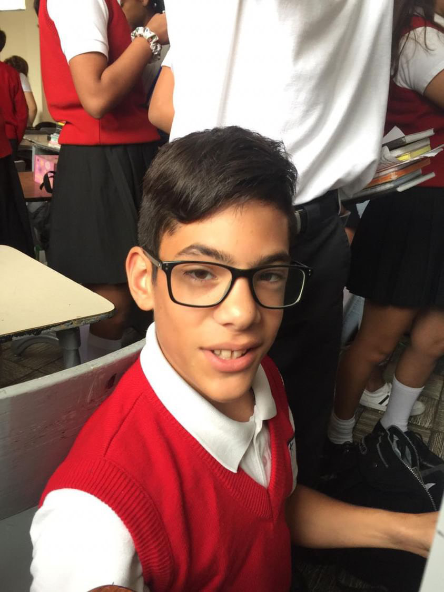
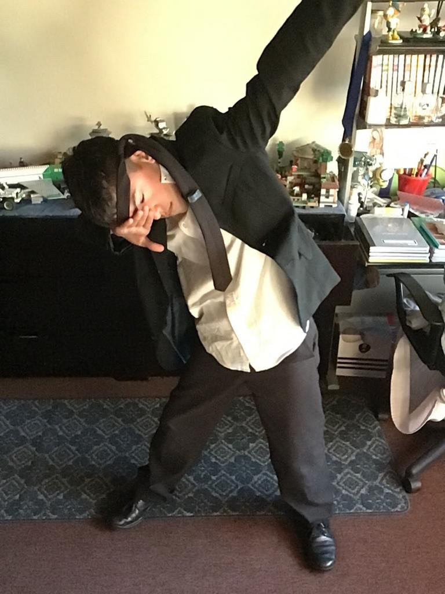

Marcelo Amezola
AKA: Dori
Edad: 19
Rango: Veterano
Nivel de Poder: 1,000,000,000
Marcelo es uno de los integrantes mas importantes del 602, y su papel es fundamental para mantener la estabilidad del grupo. Reconocido por su astucia y habilidades, es considerado uno de los miembros más destacados del equipo. Prefiere mantener un enfoque serio y profesional, ya que incluso una simple broma podría resultar en consecuencias graves como reportes o suspensiones. Le gusta pasar su tiempo disfrutando de YouTube Shorts y sumergiéndose en el mundo de Call of Duty durante sus momentos de ocio.
.jpg)
Marcelo destaca como el estudiante de mayor edad en toda la generación, pero su presencia es mucho más que eso. A pesar de su aparente tamaño y edad, su brillantez intelectual y habilidades académicas sorprenden a todos. Dentro del 602, su posición de poder jerárquico no solo le otorga respeto, sino también admiración por parte de sus compañeros. Una teoría intrigante, que ha generado debate desde tiempos inmemoriales dentro de la generación del 2006, sugiere que Marcelo podría ser un ser extraordinario. Según esta teoría, él podría estar ocultando su verdadero potencial detrás de una apariencia modesta, todo para pasar desapercibido entre sus compañeros. La idea de que Marcelo sea un alienígena encubierto añade una dimensión aún más fascinante a su historia, mostrando su capacidad para desafiar las expectativas terrenales y ofrecer una perspectiva única que inspira a todos a mirar más allá de las apariencias. Además, su apuesto aspecto y su indudable gran potencial solo añaden más misterio a su aura enigmática.
Marcelo ha surgido como un vistoso contendiente destinado a conquistar la insignia de la generación, galardonado por su preeminencia entre los selectos miembros del 602, tal como sus entusiastas seguidores y los conspicuos analistas han reverenciado. Sus facultades, en extremo asombrosas para un individuo de su mera edad y envergadura, han sobrepasado con creces las proyecciones más optimistas. A pesar de las disonantes críticas, la confianza de sus fervientes seguidores yace inquebrantable en que Marcelo desplegará su máxima destreza en los inminentes 8 encuentros de la legendaria contienda contra Lechez, con el propósito de alzar la codiciada copa local del 602. Empero, es innegable la abrumadora presión que recae sobre sus esforzados hombros, acuciada por las exorbitantes esperanzas y las encumbradas apuestas.
 602